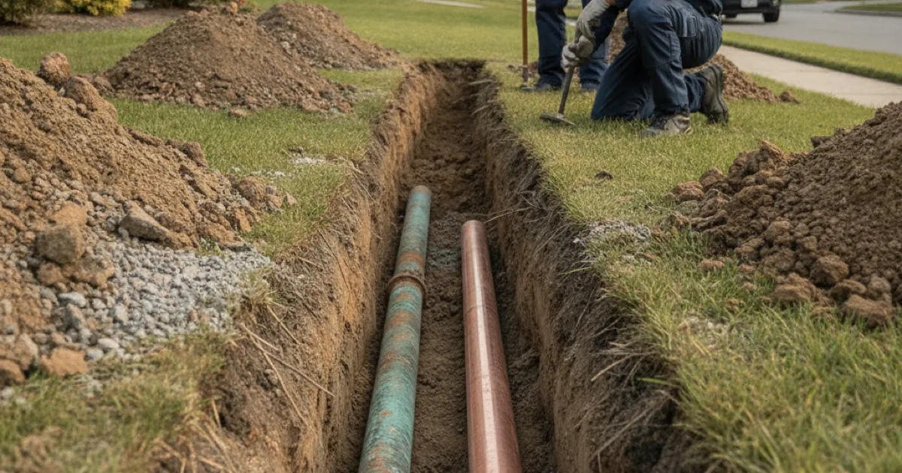

Water Main Repair in Westchester County, NY
A break in your water main can cut off water and flood your yard. Dan's Drains locates and repairs main-line breaks and leaks quickly to restore water to your home.
- Licensed & Insured
- Same-Day Service Available
- Upfront Pricing
- 15+ Years Local Experience

Need a plumber in Westchester County? We can usually help the same day.
Signs of a Water Main Break
A main-line problem tends to announce itself:
- A sudden loss of water pressure or no water at all.
- Water bubbling up in the yard or street.
- A soggy, sinking, or unusually green area along the line.
- Dirty or discolored water when it does flow.
A main break wastes a lot of water and can undermine walkways, so it needs prompt attention.
How We Repair a Water Main
We pinpoint the break, expose the damaged section, and repair or replace it with proper materials, then restore service and confirm the pressure is back to normal.
If the main is old and failing beyond a single break, we will discuss a full main supply line replacement rather than a repair that will not hold.
Talk to a local Westchester County plumber today.
What Affects the Cost
Water main repair pricing depends on:
- The location and depth of the break.
- What sits above the line.
- Whether a repair or a replacement is needed.
- Access and local requirements.
We provide an upfront price before we dig.
Main Breaks in Westchester
Ground that freezes and shifts through the winter can stress underground mains, and older lines are the most vulnerable. A break here often shows up as a wet patch or a pressure drop before anything else.
Because the main connects your home to the public supply, sound repair matters for water quality too, in line with EPA drinking water standards. We repair mains to keep that water clean and flowing.
When to Call a Pro
Call us right away if water pressure drops sharply or you see water surfacing in the yard. A main break only gets worse and wastes water the whole time.
Not sure whether it is the main or something inside? Our leak-source investigation narrows it down.
Frequently Asked Questions
How do I know if my water main is broken?
A sudden loss of pressure, water surfacing in the yard, or a soggy patch along the line are common signs. We locate the break to confirm.
Is a water main break an emergency?
It can be. It wastes water continuously and can undermine walkways and foundations, so it is best addressed quickly.
Who is responsible for the water main — me or the town?
Generally, the portion from the street to your home is the homeowner's responsibility, while the town handles the public side. We can help you sort out which part is affected.
Can you repair the main without replacing it?
If it is a single break in otherwise sound pipe, often yes. If the line is aged and failing, replacement is the lasting fix. We advise based on what we find.
Why did my main break in winter?
Freezing and shifting ground put stress on underground pipe, and older mains are the most likely to give way during a cold stretch.
Ready to book? Reach Dan’s Drains for fast, upfront plumbing help.